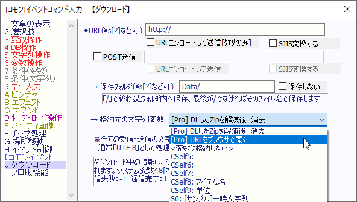

イベントコマンド 【ダウンロード】 のプロ版機能について
プロ版では、「格納先の文字変数」に特殊なコマンドが追加されます。

【基本的な説明】
・プロ版では『ダウンロード』コマンド実行時、1分以内に連続して接続したときの自動ウェイトが入りません。
・プロ版では以下の2つの[Pro]コマンドが解放されます。
【格納先の文字列変数】に追加されるコマンド
・[Pro] DLしたZipを解凍後、消去
指定Zipファイルをダウンロード後、自動で展開する機能です。展開後はZipファイルが消去されます。
オンラインアップデート用に向いています。
・[Pro] URLをブラウザで開く
指定したURLをブラウザで開きます。公式サイトや交流サイトへ誘導したり、更新があった際にストアページを開いたりすることができます。